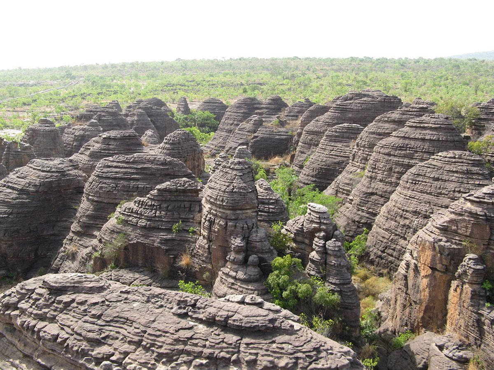
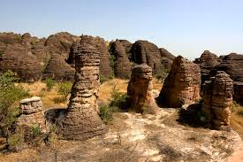
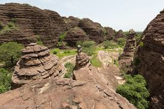

Description
Les Dômes de Fabédougou sont des formations rocheuses naturelles impressionnantes situées près de Banfora. Leur forme arrondie rappelle des igloos géants sculptés par l’érosion naturelle au fil des siècles.
Historique
Ces dômes sont un site naturel protégé depuis plusieurs années. Ils témoignent de la richesse géologique de la région et attirent chaque année de nombreux visiteurs intéressés par la nature et la géologie.
Galerie photos


